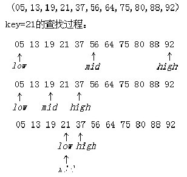

折半查找
折半查找又称为二分查找，这种查找方法需要待查的查找表满足两个条件：
首先，查找表必须使用顺序存储结构；
其次，查找表必须按关键字大小有序排列。
使用非递归实现折半查找


public class BinarySearch {
public static void main(String[] args) {
int[] array = { 1, 2, 3, 4, 5, 6, 7, 8, 9, 10 };
System.out.println(searchLoop(array, 101));
}
/**
* 循环二分查找，返回第一次出现该值的位置
*
* @param array
* 已排序的数组
* @param findValue
* 需要找的值
* @return 值在数组中的位置，从0开始。找不到返回-1
*/
public static int searchLoop(int[] array, int findValue) {
// 如果数组为空，直接返回-1，即查找失败
if (array == null) {
return -1;
}
// 起始位置
int start = 0;
// 结束位置
int end = array.length - 1;
while (start <= end) {
// 中间位置
int middle = (start + end) / 2;
// 中值
int middleValue = array[middle];
if (findValue == middleValue) {
// 等于中值直接返回
return middle;
} else if (findValue < middleValue) {
// 小于中值时在中值前面找
end = middle - 1;
} else {
// 大于中值在中值后面找
start = middle + 1;
}
}
// 返回-1，即查找失败
return -1;
}
}
使用递归实现折半查找
public static int binSearch(int array[], int key) {
int start = 0;
int end = array.length - 1;
return binSearch(array,start,end,key);
}
/**
* 递归折半查找
* @param array
* @param start
* @param end
* @param key
* @return
*/
public static int binSearch(int array[], int start ,int end, int key) {
int mid = (end + start) / 2;
if (array[mid] == key) {
return mid;
}
if (start >= end) {
return -1;
} else if (key > array[mid]) {
return binSearch(array, mid + 1, end, key);
} else if (key < array[mid]) {
return binSearch(array, start, mid - 1, key);
}
return -1;
}
折半查找的时间复杂度